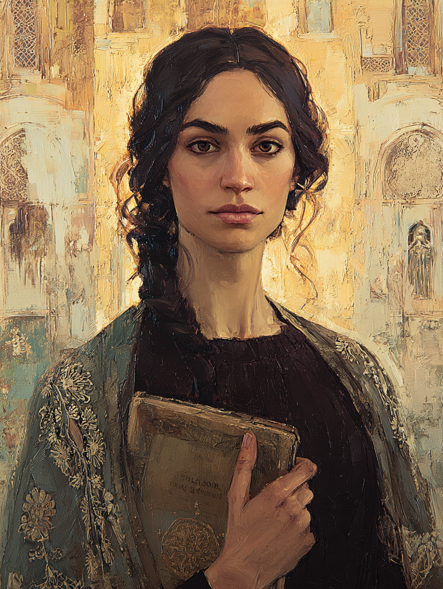

Miriam the Chronicler
Librarian of the Grand Bazaar · The Ancient Sage

Sephardic · Aged Forty-Two
On the Subject
Miriam channels the wisdom of ancient scholars to uncover forgotten truths. She works out of the arcane library tucked behind a quiet stall in the Grand Bazaar — a collection nominally maintained by the Sephardic community but quietly accessible to any serious scholar willing to pay her in rare manuscripts or older favors.
Her patrons among the long-dead speak through the artifacts they left behind, and Miriam has learned to listen. She is forty-two, unmarried by choice, and has uncovered more lost treasures in twenty years of careful reading than most adventurers find in a lifetime of digging.
Faculties & Saving Throws
Base array 16, 13, 12, 12, 11, 7; Human +1 to each
Bearing in the Field
Skills
| Skill | Bonus | Source |
|---|---|---|
| Arcana | +3 | Sage |
| History | +3 | Sage |
| Insight | +3 | Human |
| Investigation | +3 | Warlock |
| Medicine | +3 | Ancient Sage (bonus prof) |
| Nature | +3 | Ancient Sage (bonus prof) |
| Religion | +3 | Warlock |
Class Features
Ask any sentient creature that understands her a logical, full-sentence question. Wis save vs DC 13. On a failure, the target is obliged to tell the unaltered truth. Undetectable by mundane skills — only spells, feats, and abilities that detect arcane powers reveal it.
She carries the engraved Tetragrammaton talisman that her patron-spirit speaks through; without it she cannot use this feature.
Two skills from History / Medicine / Nature / Arcana / Religion — picked Medicine and Nature.
1st-level: detect evil and good, wisdom of avicenna (a.k.a. Mandate of the Sophists: Avicenna). 2nd-level: animal messenger, augury.
The Book contains 3 cantrips from any class list, which she can cast at will as warlock cantrips. Picked: Sacred Flame, Mage Hand, Minor Illusion.
If the Book is lost, she can perform a 1-hour ceremony during a short or long rest to bond with a new copy. The old book burns to ash.
Each beam of Eldritch Blast deals an additional +3 force damage (Cha modifier).
She can read all writing — known languages, ancient scripts, dead languages, cipher (with effort), and magical inscriptions provided they are not actively glamoured against her.
Spells
4 spells known, plus 4 subclass always-known; 5 cantrips (2 Warlock + 3 from Pact of the Tome)
- Eldritch Blast
- Guidance
- Sacred Flame — Tome
- Mage Hand — Tome
- Minor Illusion — Tome
Warlock pact magic: both slots are 2nd level; recover on short rest.
| Lvl | Spell | Notes |
|---|---|---|
| 1st | hex | Concentration; +1d6 necrotic on weapon attacks vs target, disadvantage on chosen ability |
| 1st | charm person | Wis save DC 13; charm humanoid for 1 hour |
| 2nd | detect thoughts | Concentration; the signature scholar's spell |
| 2nd | suggestion | Concentration; Wis save DC 13 |
| 1st | detect evil and good | Subclass always-known |
| 1st | wisdom of avicenna | Subclass always-known; ritual; advantage on Medicine 10 min, detect natural disease/poison |
| 2nd | animal messenger | Subclass always-known; ritual |
| 2nd | augury | Subclass always-known; ritual |
Cast as rituals only (no slot needed). Scribed so far:
- Detect Magic — 1st level, ritual
- Identify — 1st level, ritual
Can scribe additional Wizard ritual spells into the book by finding them on scrolls or in other spellbooks. Cost: 50 gp per spell level, 2 hours per level.
Feat
Grants the Ritual Book (Wizard class). Starts with 2 1st-level Wizard ritual spells scribed — detect magic and identify.
She can cast any Wizard ritual spell from her ritual book without preparing it, provided the spell has the ritual tag. She can add more Wizard ritual spells to her book as she finds them, paying 50 gp/level and spending 2 hours per spell level to copy them in.
Background — Sage (Librarian)
When she attempts to learn or recall a piece of lore, if she does not know it, she often knows where and from whom she can obtain it — a library, a sage, a particular merchant who deals in old scrolls, a rabbi who remembers an apocryphal text.
Assistant to and now successor of the Grand Bazaar's most respected Sephardic book-keeper.
Equipment
- Quarterstaff — 1d6 bludgeoning; +1 to hit / 1d6 −1 damage; also her walking stick
- Hanchar × 2 — dagger stats: 1d4 piercing, finesse, light, thrown 20/60; +3 to hit / 1d4+1
- Leather armour — a fitted leather jacket worn over her scholar's robes; AC 11 + Dex
- Book of Shadows — primary focus (Pact of the Tome); a thick codex bound in dark blue leather, edges stained with age and ink, containing her cantrips and pact lore
- Engraved Tetragrammaton talisman — a worn copper plate the size of a coin, engraved with the four-letter Name in tiny Hebrew letters; worn on a chain at her throat under her clothes. Her patron-spirit speaks through it — this is the artifact required for The Wise Question
- Ritual book — from Ritual Caster feat; a separate, smaller leather-bound book containing Wizard rituals (detect magic, identify to start); kept in a leather satchel always at her side
- Bottle of ink, quill, small knife — Sage
- Letter from a dead colleague — posing a still-unanswered question; Sage
- Common clothes — Sage
- Scholar's pack — backpack, book of lore, ink and pen, 10 sheets parchment, little bag of sand, small knife
- Magnifying glass — for reading damaged texts
- Case of reference fragments — sealed glass tubes containing samples of unusual inks she has identified
- Grand Bazaar arcane library — her workplace; behind a nondescript silk merchant's stall on the southwest gallery
- Apartment in the Jewish quarter — near the Galata Tower
Personality
Every conversation is a citation. When I speak, I speak from a source, and I am always able to tell you where I learned what I am about to say.
The past has answers. The dead were not less wise than the living — frequently more so. To recover what they knew is the work I was set on this earth to do.
There is a single manuscript I am chasing — referenced in three older texts, never seen, perhaps lost in a fire eleven centuries ago. I will find it or die having tried. My patron has hinted that I might, if I am patient.
I dismiss the practical and the present too quickly. The man in front of me asking for help cannot interest me half as much as a fragment of marginalia from the eighth century, and people have learned to feel my distraction.
Connections
- Collaborated with Salih Celestialwalker on deciphering ancient texts.
- Shared intellectual debates with Father Leonidas on theology and philosophy.
Her expertise in ancient texts and history aligns with the archaeological work.